Días 5, 6 y 7: Estadía en Estancia Cabo San Pablo Amanecimos tarde, agotados del largo viaje de 3500 km. Pero las Becasinas
aún resonaban… Incluso, a pesar de su pequeño tamaño
y del vasto espacio aéreo que surcaba, alcancé a visualizar
una con mis binoculares. 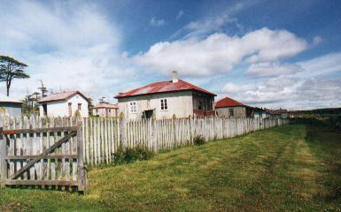 Vista de la fila de casitas que se extendía de la casa principal. La tercera era la nuestra Dado el mal tiempo reinante, con frecuentes lluvias, nos quedamos adentro bastante, así que parte de nuestra estadía se volcaba a las tareas más mundanas: preparar desayunos, desayunar, cocinar, almorzar, lavar, etc. De la cocina produje algunos buenos preparados, tal como una exquisita sopa de lentejas y unas pizzetas hechas con pan lactal, mientras que los desayunos y meriendas eran irresistibles, merced a los exquisitos dulces caseros provistos por la patrona. 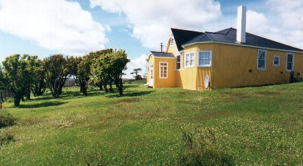 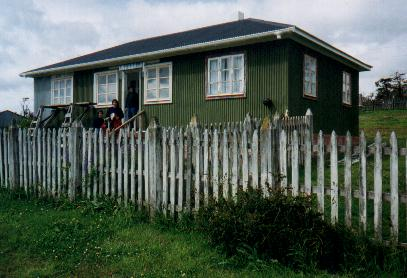 La casa principal, de amarillo, y el exterior de la casita que ocupamos Hubo tiempo también para repasar la guía de aves, preparándonos a distinguir las especies que debíamos tratar de encontrar aquí. Estabamos rodeados por bosque de ñire (Nothofagus antarctica), y eso implicaba la posibilidad cierta de observar numerosos habitantes silvestres, propios de esta vegetación, algunas de las cuales nunca habíamos visto antes. Las ganas por descubrir pudieron más que el frío y la lluvia. La primera mañana salimos con Nico bajo la llovizna, con capas de agua y botas, a buscar los primeros ejemplares. Nos internamos por un bosque ralo detrás del casco y a poco andar encontramos a nuestro viejo y simpático amigo de otros bosques patagónicos: el Rayadito. Hubo abundantes Cabecitanegras Australes, una Remolinera Común - que más tarde pudimos observar desde las ventanas de la casita - y escuchamos el frecuente canto del Fiofío Silbón. Y con este último ejemplar quisiera extenderme. Al ver este pequeño pajarito de colores grises, es fácil identificarlo por su peinado estilo “raya al medio”, que expone un surco blanco brillante. Parece que se quiso engominar y lucir un peinado muy varonil del siglo pasado, pero el peine afilado que utilizó, al parecer, talló un profundo tajo en su cráneo. Se trata dada más que de plumas, pero el efecto es el de una herida ósea cauterizada, practicada por cirujano neurólogo. Otro aspecto notable de este pajarito es su canto. Más de una vez, al pasar por un bosque ralo, se oían sus llamados desde varias direcciones, indicando la presencia de 4 o 5 individuos. Esto no era sorprendente, siendo una especie muy común. Pero lo curioso era la variación de sus voces. Casi siempre anunciaba su presencia con una sola nota silbada: “…uíu…”. (Los puntos suspensivos al comienzo y al final intentan representar la modulación del volumen de la voz, que nace y termina muy suavemente, mientras que el énfasis central está dado por la “i”en mayúscula y acentuada). Pero esta nota se emitía afinada en tonos diferentes: más agudos o más graves, según el individuo. Cada personaje repetía su canto hasta el cansancio en su registro particular, enseñando insistentemente a los demás como se ha de cantar correctamente en DO, mientras que los demás se resistían a doblegar, aferrándose a sus muy propios SOL, LA y FA. Claramente esta especie no tiene oído absoluto. ¿O será que esta variación permite diferenciar familias, edades o estatus social? Otra variante del canto consistía en emitir 2 o más notas,
en vez de una. E incluso algunos emitían casi un trino, algo así
como “…brrrío…”, en donde parecía que la normalmente límpida
nota aflautada estaba siendo emitida por debajo del agua. A diferencia
de lo que recuerdo de la zona de Los Antiguos, en el norte de Santa Cruz,
identificar al Fiofío Silbón por su voz resultó ser
un desafío algo más complejo de lo esperado. Siempre aparecía
una nueva variante, que me llevaba a pensar inicialmente que estaba ante
otra especie. A la tarde salimos en auto por el camino totalmente embarrado, hacia una loma alta desde donde es posible intentar una llamada telefónica por celular a la distante Río Grande. Teníamos que movilizar los tramites para que el semieje llegue desde Córdoba sin demoras. Luego fuimos a pasear a la costa. A pocos metros antes de llegar a la costa atlántica vimos el planeo de una gran sombra que sobrevolaba la zona, pasando por la vertical de costas pedregosas, bosques de ñire, e incluso las zonas bajas donde corre el Río Ladrillero. Era ni más ni menos que un Cóndor Andino. Eran 2 o 3. Nos detuvimos y los observamos planeando bastante bajos sobre nuestra posición. Aparentemente, hace 15 años no frecuentaban esta zona, pero ahora son comunes. ¿Será que no les queda hábitat más arriba en las montañas? ¿Será que no encuentran alimento? ¿A cuál de las múltiples consecuencias de alteración del ambiente estarán respondiendo? La costa en si era de puro canto rodado. Cientos de miles de piedras. Esta playa pedregosa se extendía por mucha distancia, pero hacia ambas direcciones había promontorios: hacia el sudeste el Cabo San Pablo propiamente dicho, y hacia el noroeste el Cabo Ladrillero. 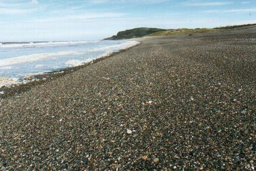 Playa de pura canto rodado, y a la distancia, el Cabo San Pablo propiamente dicho El patrón de la estancia nos había contado como el navegante Magallanes despachó a su subalterno, un tal Ladrillero, a explorar esta parte de la costa, y era justamente aquí donde fondeó. Además, en el campamento terrestre se produjo un incendio- Este accidente, ocurrido hace cientos de años atrás, dejó bautizada a la pequeña bahía donde estábamos ahora: Bahía Quemado. 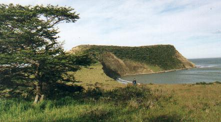 Cabo Ladrilero, que se interna en el mar. Hacia la derecha se extiende Bahia Quemado Terminamos el paseo con una larga caminata por el bosque, bordeando un acantilado alto coronado de ñires, los cuales reciben el embate del viento costero. El bosque parecía ideal para ver aves, pero estaba casi desierto. Solo en el regreso observamos una Garza Bruja apostada en un árbol, y en un lugar más alejado de la senda irrumpimos en una ciudad de Ratonas Comunes. 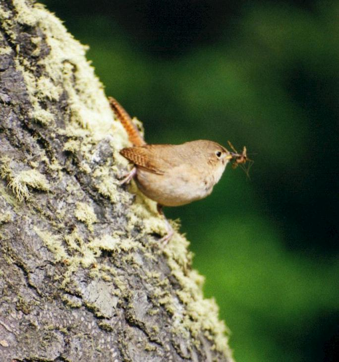 Se trataba de una de las especies de pajaritos más comunes, tan frecuentes de observar en jardines de Buenos Aires y de casi cualquier parte del país, en particular cerca de viviendas, dada su predisposición confiada. Pero aquí estábamos ante ejemplares que se enorgullecían de ser verdaderamente salvajes. Bulliciosos, agresivos y desafiantes, siguieron de cerca nuestro paso por su zona urbanizada. En los días venideros volvimos a encontrar otros grupos de Ratonas que reflejaban el mismo comportamiento arisco. ¿Serán tribus de renegados, que nunca quisieron acercarse a la civilización? ¡Ojalá prosperen! La foto es de una Ratona Común (Troglodytes aedon) captada
en bosques de lenga cerca de Ushuaia. A la vuelta, y tras una merienda, nos percatamos que aún quedaba mucha luz, ya que por la extrema latitud aquí anochecía pasada las 22 horas. El clima también había mejorado notablemente. ¿Que mejor oportunidad para hacer otro paseo? Y así es que a las 8 o 9 de la noche volvimos a salir a caminar, esta vez en busca de castores. No los encontramos, pero vimos patos, una bandada de Cauquenes Reales, y por primera vez en la vida estuvimos cerca de los loros de por aquí: las Cachañas. Grandecitas, ariscas, verdes, pero con la cola naranja-rojiza, tuvimos la suerte que se vinieran volando a una rama del mismísimo árbol bajo el cual estábamos apostados en silencio, lo que nos permitió sacarles alguna foto. 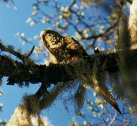 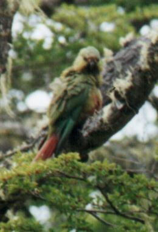 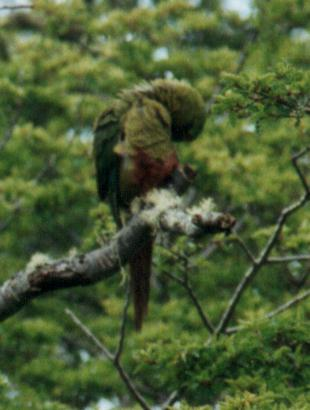 Tres fotos de Cachaña (Enicognathus ferrugineus) en los ñires de Ea. Cabo San Pablo 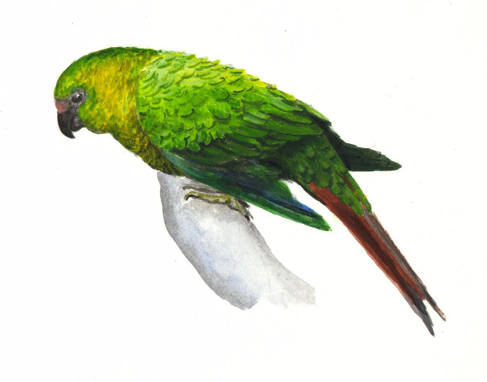 Acrílico de una Cachaña, por A. Earnshaw (A partir de fotos tomadas por Rodolfo Suarez) ----- o ----- El segundo día en la estancia lo pasamos subidos a caballo. Ante nuestra inquietud sobre la posibilidad de cabalgar, los patrones dispusieron 6 caballos verdaderamente hermosos equipados con comodísimos recados. Eran 6 por que nos acompañaría Mariana, hija menor de los terratenientes. Los cielos nos permitieron una salida de 6 horas. Iniciamos la cabalgata por el camino de tierra, rumbo a la costa. Pronto vimos, por primera vez, un grupo de Tordos Patagónicos. Seguidamente comenzamos el ascenso a una lomas elevada, circulando por una “calle” tallada en el bosque. A ambos lados veíamos los hermosos ñires, mostrando todos su característica forma, con troncos y ramas retorcidas. Avanzábamos entre arboles vivientes, de hojas pequeñas de verde bien oscuro, aunque uno siempre encuentra algunas dispares que han optado por mantener el color rojo vívido del otoño, el tono oxidado de la hoja seca invernal, o un amarillo brillante – vaya uno a saber de cual estación. El bosque no siempre era muy tupido, y en algunas partes diría que era bastante ralo, con arboles dispersos sobre una alfombra de pasto verde intenso. Todo en derredor de los arboles yacían innumerables troncos caídos y secos, algunos presentando desnudos su madera muerta, casi blanca, y otros recubiertos de abundantes líquenes, hongos y helechos. Pero todos ellos exponían formas aún más retorcidas, testimoniando la agonía y el dolor de la muerte. Sobre las ramas de los arboles vivos aparecían los llamados “Farolitos Chinos” (género Myzodendron). Estos vegetales parásitos de aspas radiales, cuyas inflorescencias terminales delimitan un espacio casi esférico de hasta un metro de diámetro, presentan colores brillantes y variados. Algunos pintaban de naranja o verde amarillento, y otros de rojo púrpura oscuro. Casi todas las ramas, incluso las muertas, estaban pobladas de curiosos líquenes de color gris verdoso, aptamente denominados “Barba de Viejo” por su aspecto de ramilletes de largos cabellos colgantes. Este último componente es el que daba espesor, multiplicando muchas veces el espacio ocupado por las delgadas ramas secas, y convirtiendo el paisaje en un verdadero entretejido corpóreo. Una maraña complejísima. ¿Pero que mejor que ver esto en dos imágenes de más alta resolución...? 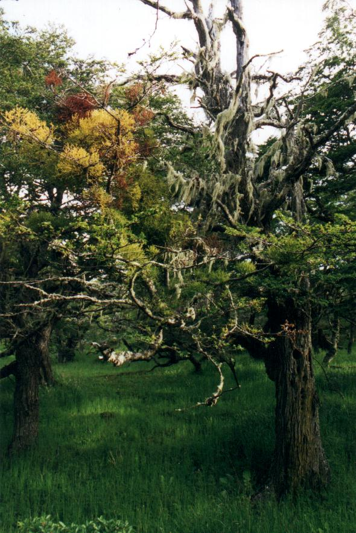 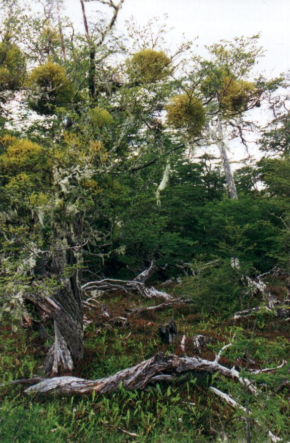 Foto de la izquierda: Nótese arriba a la izquieda el brillante colorido de los "Farolitos Chinos". El piso estaba tapizado de pastos y hierbas verdes Foto de la derecha: Aquí el bosque está tapizado de helechos, algunos de los cuales presentan hojas moradas Este tramo fue tal vez uno de los pasajes de bosque más hermoso de todo el viaje. Al observar esta belleza multicolor que deleitaba la vista, traté de explicar objetivamente la razón por la cual uno confiere a esta visión ese justo calificativo: “belleza”. Llegué a la conclusión que, aparte del vívido colorido, tal atribución era consecuencia de la increíble complejidad y pureza de la imagen que llegaba a mis ojos tras surcar el aire fueguino cristalino. Infinidad de pequeñas hojas crenuladas en cada una de las miles de ramas que hubiera podido contar, infinidad de grietas en la corteza de cada tronco, infinidad de planos ocupados parcialmente por Barba de Viejo, dejando ventanas naturales que invitaban al juego de ocultamiento del plano siguiente. Y todos estos detalles llegaban juntos, nítidamente, y se asimilaban. ¡Que asombrosa es la capacidad de visión! Tal vez esa complejidad visual satura al intelecto, obligando a la mente a deponer para otro momento todo pensamiento, ansiedad y preocupación. Estaríamos embriagados visualmente, y por eso el paisaje era bello. ¿Será por eso que las edificaciones de El Alambra son hermosas, al quedar uno encandilado por los infinitos arabescos pintados en las mayólicas que adornan sus paredes, domos y columnas? Los caballos subieron la loma como si fuesen tractores, y buscaron acelerar el tranco para que su sufrimiento dure menos. De pronto la subida terminó, y también el bosque y la montaña: estábamos ahora frente al mar, en la cima de un acantilado. Sus paredes no eran verticales, sino inclinadas, exponiendo una gran ladera de arena y roca que bajaba a la costera. El paisaje era hermoso, pero aquí la sensación de belleza tenía otro origen: se debía a la serenidad de la imagen. La inmensidad del mar y del aire. Detrás, el fondo celeste del cielo, el horizonte y el Océano Atlántico, hoy calmo. Un paisaje infinito, armonioso y simple. El único accidente visual era el promontorio del Cabo Ladrillero, compuesto por una gran lomada que se internaba en el mar casi frente nuestro. Por su gran dimensión, y por nuestra ubicación particular respecto del mismo, nos daba una extraña perspectiva del cabo que no permitía comprender del todo su forma volumétrica. 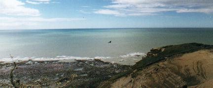 La costa, el cabo, y en el centro un Cóndor Andino (Vultur gryphus) (Tomado con lente gran angular de 24mm) Decidimos desmontar para almorzar. Comimos mientras charlábamos con nuestra guía, aprendiendo de las vicisitudes de la vida lejos de todo. Cada 15 segundos observábamos el veloz paso de unas golondrinas que, con gran maestría a pesar de sus pequeñas alas, circulaban entre los arboles y nuestro improvisado comedor en declive, volando a medio metro del piso. Mostré a Mariana que se trataba de dos especies distintas: esta era la Patagónica, con su evidente rabadilla blanca, y aquella era la Barranquera. Pero pronto pasó una sombra. Eran los Cóndores de nuevo, que en grupos de 2 o 3 sobrevolaban la pendiente del acantilado Un extraordinario lugar para tomar fotos, puesto que las aves pasan muy cerca del borde, permitiendo tomas desde arriba, ideal para captar el blanco del lado superior de sus alas. ¿Y como fondo? ¡Mar! ¡Que extraña combinación! Aproveché para darme el lujo de captar fotos de Cóndores con una lente gran angular de 24mm, mostrando así no solo el ave, sino también el curioso hábitat elegido por estos individuos. Pero una vez que puse el teleobjetivo para hacer tomas más cercanas, había perdido las mejores pasadas, así que no logré fotos ideales. 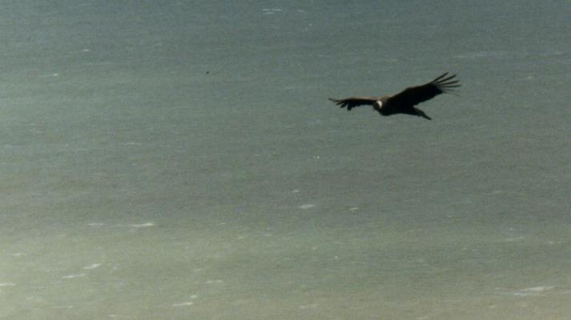 ¡Inusual hábitat para un Condor! En realidad no sobrevuela el mar, sinó la barranca Foto con lente zoom (70-220mm) 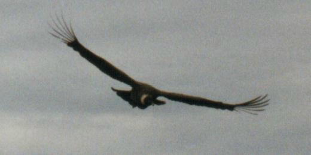 Las plumas de la punta de las alas forman los característicos "dedos" 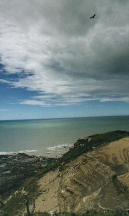 Volvimos a montar. Tras una peligrosa bajada, un galope y una caída inconsecuente, volvimos a la ruta, y tras recorrer más de 6 km. por el camino de tierra de vuelta hasta llegar al casco, desmontamos. Nos sentíamos muy pequeños al recuperar nuestra verdadera estatura. Y allí mismo apareció nuestro primer Diucón; ave gris, casi del tamaño de un zorzal, y de ojos colorados. La emoción de ver una especie nueva ayudó mucho a aliviar el lento y doloroso proceso de reacomodamiento pélvico, después de tantas horas apoyado en la montura. 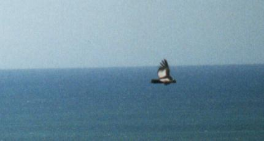 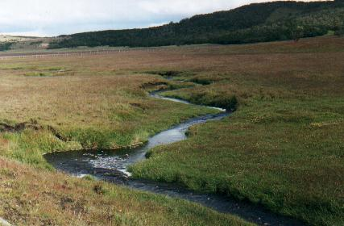 Tal vez no exista imagen más característica de Tierra del Fuego que esta: sus valles planos con arroyos por todos lados, pasto verde y turberas de color rosa-naranja. Y en las distantes lomas, bosque de ñire. 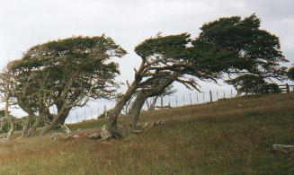 Cerca de la estancia algunos arboles presentaban "forma de Bandera", como se los conoce. Hoy no había viento. Los arboles constituyen una memoria viviente de las tempestades... ----- o ----- ¡Ya éramos varios entonces que perseguíamos sin éxito a estos pajarracos del bosque! Hasta ahora los habíamos rastreado asiduamente los 5 sentidos en cada salida, sin resultado. Los alemanes nos explicaron que la idea de filmar cerca de un nido activo era para facilitar la oportunidad de hacer tomas, ya que si las aves se espantaban, el instincto paternal seguramente las haría volver una y otra vez a sus pichones. Les convidamos café para aliviarlos del frío que evidenciaban, oímos sus historias, pero no teníamos datos para orientarlos. Luego de intercambiar emails, los despedimos de vuelta a la intemperie, fría y lluvioso. Después de almorzar decidimos también salir a encontrar los carpinteros, que en opinión de los dueños de casa eran “muy comunes, acá nomás, en los arboles detrás de la casa”. Hoy era nuestro último día, y no podríamos enfrentar la partida sin haberlos visto aquí, donde son “infaltables”. Nico y yo salimos en la búsqueda. Reinaba el frío, los pastos largos estaban empapados, pero al menos no caía más agua. Pronto encontramos en el bosque una especie nueva, el hermoso e inquieto Picolezna Patagónico, trepando troncos y avanzando por las ramas de manera invertida. Su curioso pico parece haber sido colocado al revés. Pero del carpintero, nada. Guardaríamos al hallazgo del Picolezna como “premio consuelo” de esta salida, si no teníamos éxito. ¡Cómo lo desmerecimos! Muchas veces nos parecía oír un distante traqueteo que, esperanzados, atribuíamos a golpes del carpintero contra un árbol, pero seguramente era sólo nuestra imaginación. A veces el bosque era muy ralo, y no parecía ser el hábitat correcto. Pero recordábamos las animosas palabras de los dueños, y no perdimos las esperanzas. Seguramente en aquel bosquecito, unos cien metros más adelante, había una buena posibilidad de que aparezca… Entramos al bosquecito y, de repente, oímos algo, no muy lejos. Nos detuvimos a escuchar en silencio. Golpe tras golpe, pronto maduró en nosotros la certeza de haber dado con la especie buscada, en el preciso lugar donde la vinimos a buscar. Pocas alegrías son tan intensas, y seguramente mi sonrisa y expresión de entusiasmo eran tan encendidas como la que veía en la cara de mi hijo. ¡Y aún no habíamos visto nada! No queríamos precipitar el avance, a no ser que se vuele. Nos
acercamos con extrema cautela y sin la más mínima prisa. ¡Y lo vimos! El inconfundible rojo puro de la cabeza y mitad del cuello del Carpintero Gigante macho, en el piso, picoteando un tronco desmembrado en busca de bichitos. Pronto advertimos que estábamos rodeados por toda una familia. Divisamos a la hembra, totalmente negra y con su ridículo pero distinguido "jopo" encorvado hacia delante. Y posado verticalmente en un árbol, el juvenil, que presentaba el mismo rojo vívido solamente en su modesto copete. 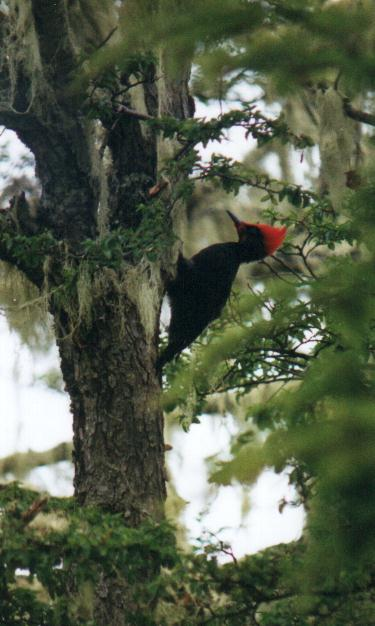 Nos encontrábamos en el medio de una típica escena familiar: el macho, indiferente, glotón, descuidado, continuaba interesado en sus escarabajos. El juvenil ruidoso e ingenuo, seguía peligrosamente cerca, “chateando”. La hembra precavida y desconfiada, dictaba órdenes tanto a su hijo desobediente como a su marido perezoso, y ni uno ni otro la obedecían. Testimoniamos la escena desde el centro de un triángulo equilátero, con un carpintero gigante en cada vértice, a sólo 5 o 6 metros. Eramos dioses en el cielo de la ornitología. Nos miramos una y otra vez, cómplices de estar disfrutando este momento. ¿Cuánto más duraría? ¿Será la única vez en la vida que estaremos juntos frente a estos bichos?De repente la hembra se voló a otro árbol, mostrando un despliegue de plumas blancas que tiene escondidas entre sus alas. El macho sintió entonces la necesidad de hacer algo por su familia. O tal vez estaba respondiendo al llamado que intentábamos reproducir contra un árbol, con la esperanza de atraerlos aún más. ¿Llamado? Habíamos visto alguna vez un video extraordinario sobre aves que mostraba como, con un simple traqueteo realizado con dos piedras sobre un tronco de árbol, permitía atraer a estos carpinteros a una distancia increíblemente corta. En consecuencia, durante los últimos tres días, había hecho el esfuerzo de recorrer las subidas y bajadas fueguinas lastrado con dos piedras en el bolsillo – no vaya a ser que, de presentarse un carpintero, no encuentre piedras en el lugar. Pero ese día no las traje. Y ahora que realmente las necesitaba, descubrí que, en ese preciso sitio, no había una sola pierda. ¡Mi reino por una piedra! ¡O dos! Este carpintero utiliza su pico como miembro multiuso. De golpe duro, afilado y preciso, lo utiliza para tallar su nido en los durísimos troncos de ñire y para escarbar bajo las cortezas en busca de alimento. Incluso, haciendo golpes y asistido por su audición, ubica huecos en la madera donde están alojadas las larvas que componen su dieta – una manera de prospección y búsqueda de sitios donde perforar que garanticen resultados comestibles. Pero también lo usa para emitir una advertencia sonora, que sirve para mantener contacto con sus congéneres en el denso bosque, y para desafiar a competidores y enemigos. Su mensaje característico es un potente “ta-tac”, compuesto por dos golpes sonoros, secos y certeros, separados por un intervalo de tiempo tan corto que ambos casi se funden en uno. ¿Menos de una décima de segundo? La transcripción correcta sería, más bien, “¡tarák!”. No cualquiera puede emitir dos golpes fuertes tan juntos, y estimo que el más macho posee la mayor destreza para realizarlo. Sería entonces un indicador de virilidad y dominio territorial en esta especie. Para tratar de imitar esta sonorización, nada mejor que disponer de dos piedras. Con maderas la imitación es pobre, por que el golpe no logra la misma característica acústica, seca y contundente que produce el ave con su pico. Y una piedra sola no basta, por que la inercia no da tiempo a realizar los dos golpes tan juntos. Hacen falta las dos piedras. Pero, dada las circunstancia, tratamos de imitar el sonido utilizando dos trozos de palo, empapados, ramosos, y en proceso de descomposición. Apenas logramos burlar al macho, que voló a un árbol seco algo distante y martilló su “ta-tac” tal como lo habíamos notado en el video. Una o dos veces lo emitió, nada más. No creo que estuvimos a su altura para desafiarlo. No éramos competencia para él, y no tenía por que enfrentarnos. No había contienda, y se voló. Su familia lo siguió. La experiencia resultó maravillosa, y quisimos compartirla con el resto de la familia. Luego de una reconfortante merienda en la casita, los cinco remontamos de nuevo la larga cuesta hasta el sitio del hallazgo. Al llegar al mismo lugar, los volvimos a ver. Nos sentamos en un tronco y seguimos el reacomodamiento de padre, madre e hijo macho ante nuestra presencia, hasta que al fin se volaron. ¿Piedras? ¿Para que? 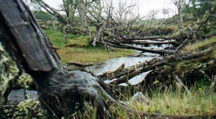 Faltaba aún cumplir con la observación de otro animal: los castores. Bajamos hacia el río por un bosque hermoso y allí encontramos que el valle estaba endicado por arquitectos industriosos. Grandes troncos caídos mostraban claramente como habían sido partidos en dos por el filoso tallado de los dientes de estos mamíferos traídos desde Canadá.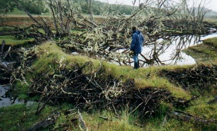 El paredón de palos construido por los castores estaba coronado de tierra con pasto crecido, y tenía un suave declive aguas arriba internándose en la laguna creada por el cierre del cauce. Aguas abajo se notaban estructuras de refuerzo que parapetaban el dique para contener la presión ejercida por el agua. En toda la laguna había arboles caídos, la mayoría no cortados sino muertos por la inundación resultante. Esto creaba diversos escondites, y de uno de ellos vimos salir nuestro primer castor. Evidentemente nuestra presencia no era muy bienvenida, por que no vimos más actividad. Pero habíamos comprobado que vivían, y eso nos bastaba - por ahora.Según nos había contado Juan Apolinaire, los castores - traídos con fines peleteros hace más de 50 años - han invadido la isla, y ya han causado la pérdida de 1,6% del bosque fueguino. A diferencia de las especies arbóreas de su lugar de origen, los ñire crecen muy lentamente, dificultando la recuperación forestal. Además, al no tener enemigos naturales, los castores se multiplican y se han convertido, lamentablemente, en una plaga. Esa noche tuvimos oportunidad de contar a los dueños de casa sobre nuestra experiencia con los carpinteros, en un banquete algo formal que nos ofrecieron. ¡Cordero patagónico al horno! Delicioso...
|